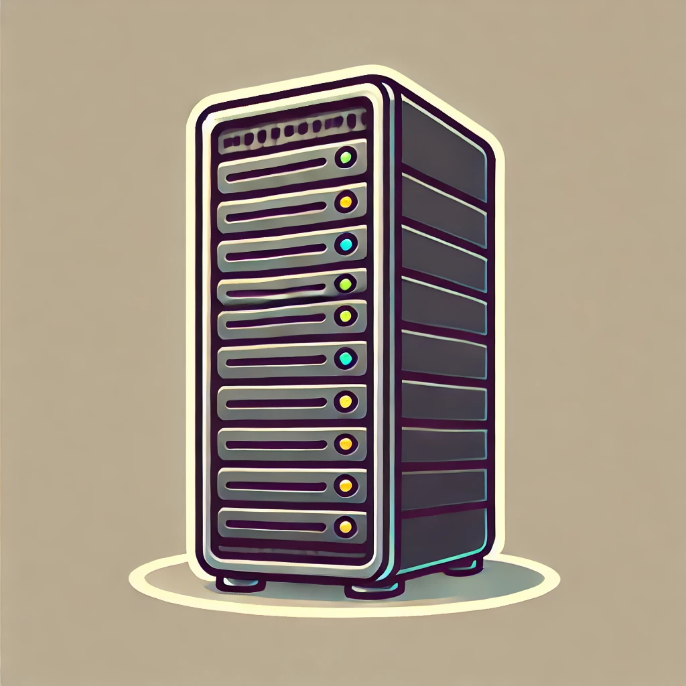
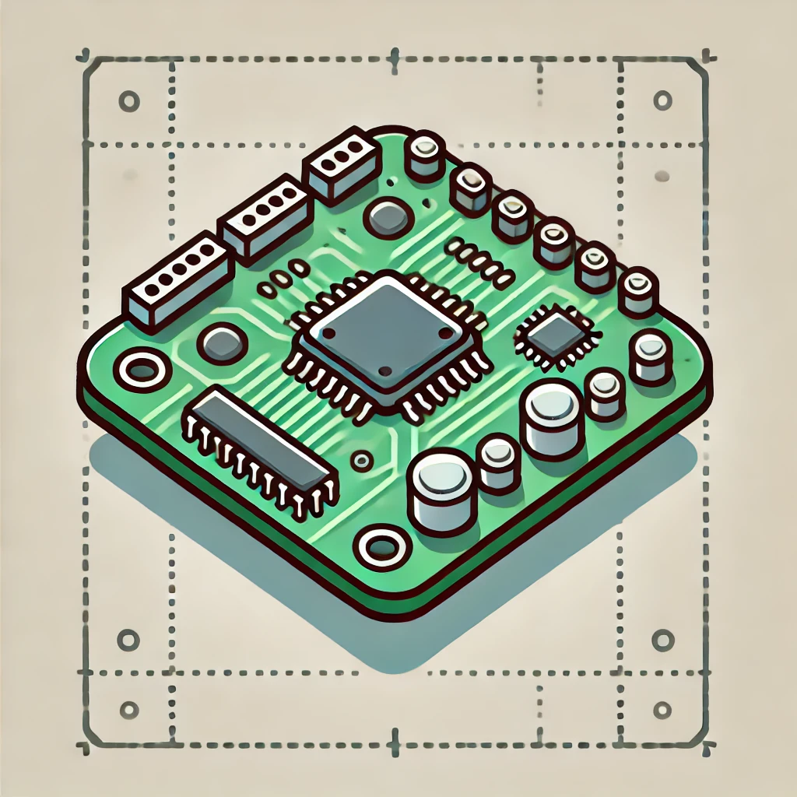

Einführung und Geschichte
ITS-Net-Lin
Sebastian Meisel
Geschichte
Die Anfänge

- 1991 begann der finnische Student Linus Torvalds die Entwicklung eines freien Unix-ähnlichen Betriebssystemkernels
- Ursprünglich als Hobbyprojekt gedacht, um ein alternatives System zu MINIX zu schaffen
- Der Name "Linux" ist eine Kombination aus "Linus" und "Unix"
Die GNU/Linux-Verbindung

- Linux wurde mit GNU-Software kombiniert, die bereits seit 1984 unter Richard Stallman entwickelt wurde
- Die GNU General Public License (GPL) wurde als Lizenz gewählt
- Dies ermöglichte die freie Verteilung und Modifikation des Quellcodes

Entwicklung zur Gegenwart
- Rasantes Wachstum durch weltweite Entwicklergemeinschaft
- Einsatz von verteilten Versionskontrollsystemen (erst CVS, dann Git)
- Heute: Millionen von Entwicklern weltweit beteiligt
Hauptmerkmale von Linux
- Technische Eigenschaften
- Multitasking-fähig
- Multiuser-System
- Hohe Stabilität und Sicherheit
- Modularer Aufbau
- Hardware-unabhängig
- Philosophie
- Open Source
- Freie Software
- Community-getrieben
- Transparenz
- Sicherheit durch Offenheit
Die wichtigsten Distributionsfamilien
Eine Linux-Distribution (kurz: Distro) ist ein Betriebssystem, das auf dem Linux-Kernel basiert und zusätzlich eine Sammlung von Softwarepaketen enthält, um eine vollständige und benutzerfreundliche Umgebung bereitzustellen.
Zu den Komponenten gehören:
- der Kernel.
- Systemtools.
- Bibliotheken.
- Anwendungssoftware.
- optional: ein Desktop-Environment.
Debian-Familie
- Debian GNU/Linux
- Einer der ältesten Distributionen
- Stark community-orientiert
- Bekannt für Stabilität
- Ubuntu
- Basiert auf Debian
- Benutzerfreundlich
- Große Community
- Verschiedene Varianten (Kubuntu, Xubuntu, etc.)
- Linux Mint
- Basiert auf Ubuntu
- Fokus auf Benutzerfreundlichkeit
- Traditionelle Desktop-Umgebung
Red Hat-Familie
- Red Hat Enterprise Linux (RHEL)
- Kommerzielle Distribution
- Fokus auf Unternehmenseinsatz
- Lange Support-Zeiträume
- Fedora
- Community-Version von Red Hat
- Bleeding Edge Technologie
- Testplattform für RHEL
- CentOS
- Freier RHEL-Klon
- Beliebt für Server
- Stream-Version als Rolling Release
SUSE-Familie
- SUSE Linux Enterprise
- Kommerzielles Angebot
- Fokus auf Geschäftskunden
- openSUSE
- Community-Version
- Zwei Editionen:
- Leap (stabil)
- Tumbleweed (Rolling Release)
Arch-Familie
- Arch Linux
- Rolling Release
- Minimalistisch
- "Do it yourself"-Ansatz
- Manjaro
- Benutzerfreundliche Arch-Variante
- Vorkonfigurierte Desktop-Umgebungen
- Stabilere Paketbasis
Einsatzgebiete
Linux hat sich aufgrund seiner Flexibilität und Open-Source-Natur in verschiedenen Bereichen etabliert und ist inzwischen das insgesamt am meisten verbreitete Betriebssystem.
Desktop
- Private Nutzung
- Office-Arbeitsplätze
- Entwicklungsumgebungen
- Markteanteil 2–4% beträgt (je nach Quelle).
Server

- Webserver
- Datenbankserver
- Cloud-Computing
- Markteanteil 70% - 80% (90& Cloud)
Embedded Systems

- IoT-Geräte
- Smartphones (Android)
- Smart Home
- Marktanteil > 90%.
Weltall
Linux wird im All für die Steuerung von Raumfahrzeugen, Satelliten und Bodenkontrollsystemen eingesetzt. Beispiele sind der Mars-Rover „Perseverance“ und verschiedene Satelliten. Seine Anpassungsfähigkeit und Stabilität machen es zur bevorzugten Wahl in der Raumfahrt.
Zukunftsperspektiven
- Wachsender Marktanteil im Desktop-Bereich
- Dominanz im Server- und Cloud-Segment
- Wichtige Rolle in der KI-Entwicklung
- Kontinuierliche Verbesserung der Benutzerfreundlichkeit